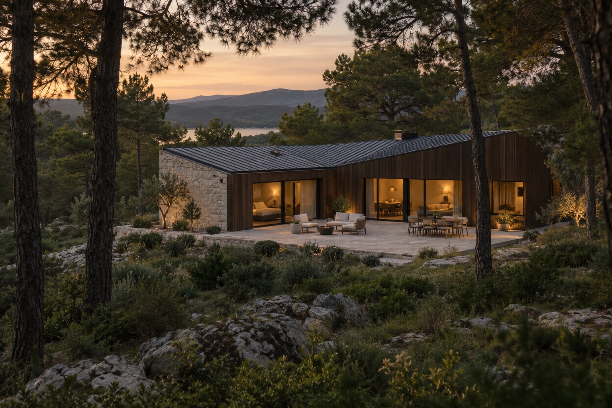
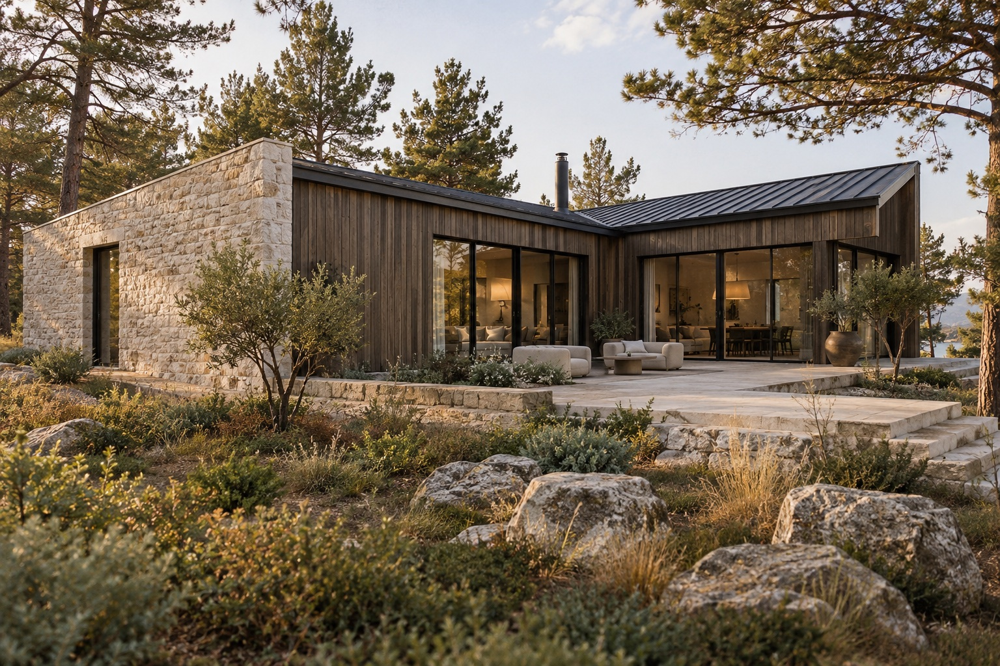
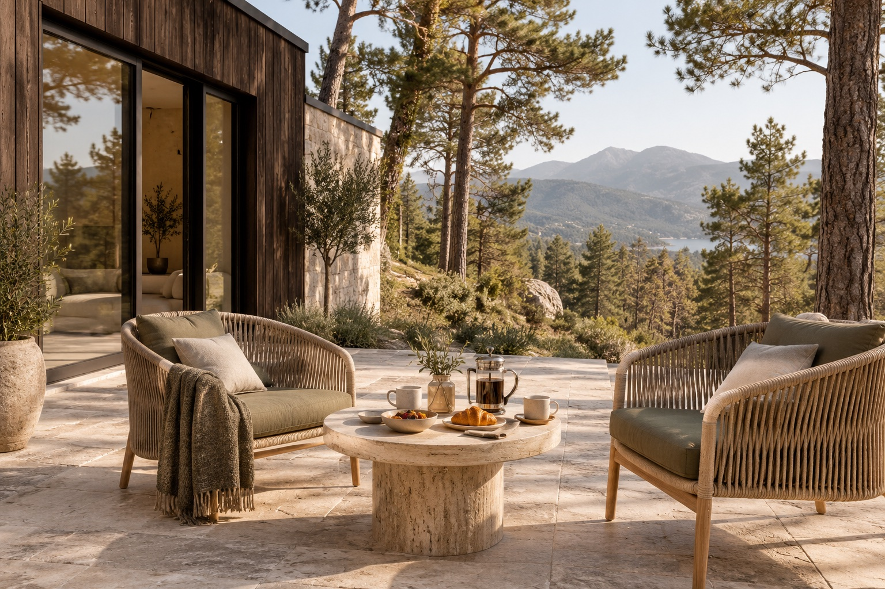
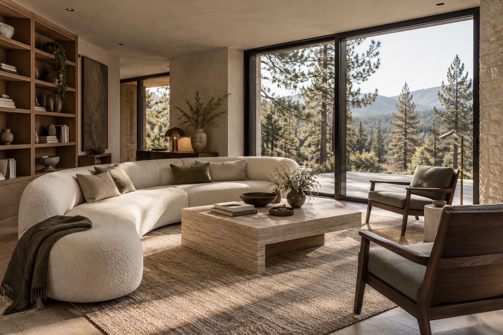
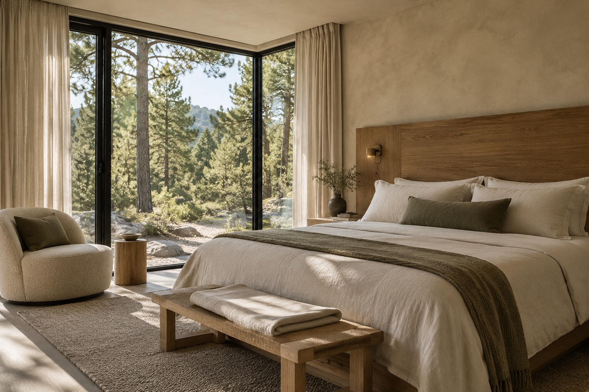
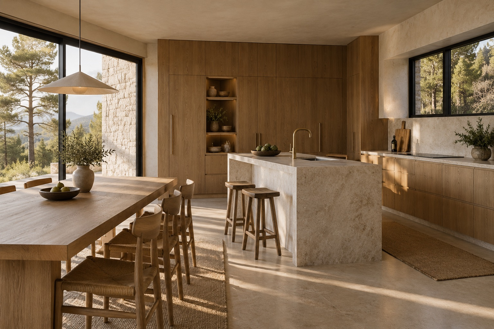
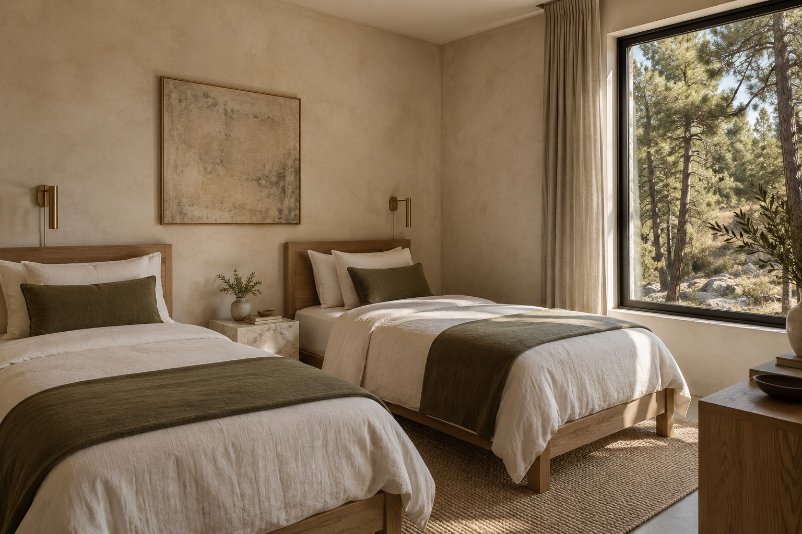

Vila Tihora Vaš mir, iznad svakodnevice.
Miris borova, topli kamen i svetlost koja ulazi kroz velike prozore. Vila Tihora je zamišljena kao mirno utočište za zajedničke trenutke u prirodi.
Kuća u kojoj odmor dolazi sasvim prirodno.
Vila Tihora je izmišljena kuća osmišljena za ovaj portfolio koncept. Jednostavna prizemna arhitektura spaja tamni hrast, prirodni krečnjak i velike prozore okrenute borovoj šumi.
Koncept prati ritam sporih jutara na kamenoj terasi, zajedničkih obroka u svetloj kuhinji i tihih večeri u toplom dnevnom boravku. Prostori, sadržaji i površina prikazani su kao deo zamišljenog objekta.

Hrast, kamen i borovi
Prizemna arhitektura u prirodi
Prostori u kojima boravite
Samostalni dizajn koncept za izmišljenu vilu. Slike predstavljaju zamišljene prostore i služe za ilustraciju vizuelnog pravca.

Jutra na kamenoj terasi
Prirodni kamen, udobne fotelje i doručak uz pogled na borovu šumu.

Prostor za zajedničke trenutke

Mirna jutra uz pogled na šumu

Sve što je potrebno za domaće obroke
Kompletno posuđe, šporet sa rernom, frižider i kuvalo za kafu i čaj pre polaska u šetnju.

Prostor za decu ili prijatelje
Dva odvojena ležaja, prirodni materijali i veliki prozor koji unosi svetlost borove šume.
Sve za prijatan boravak.
Kuhinja za zajedničke obroke, terasa za jutarnju kafu i prostor koji je samo vaš.
Planina, u vašem ritmu.
Borova šuma, staza ka vidikovcu i mirna obala jezera oblikuju zamišljeni svet vile Tihora. Ovde se prikazuje način na koji sajt može da predstavi okruženje i atmosferu boravka.
Karta je ilustrativna i nema stvarnu adresu ili koordinate. Vila Tihora nije smeštaj koji se može rezervisati.
Vila Tihora
Izaberite „Istraži mapu” za pomeranje. Mapa nije namenjena navigaciji.
Vaš sledeći predah počinje ovde.
Izaberite dolazak i odlazak. U ovom konceptu možete pogledati kako bi izgledao upit za boravak.